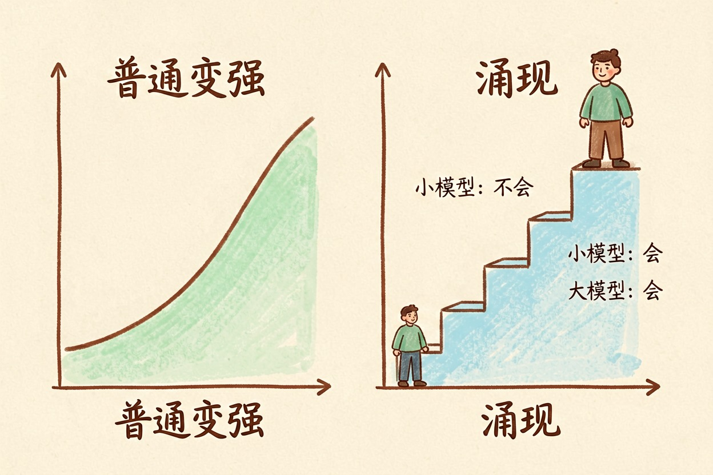
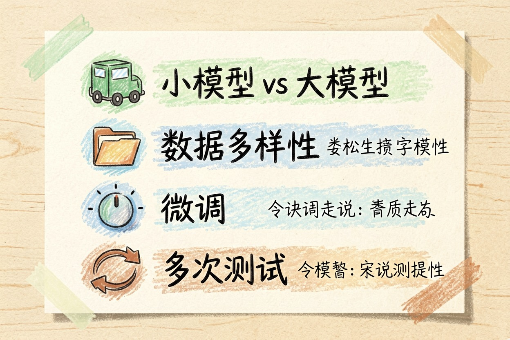
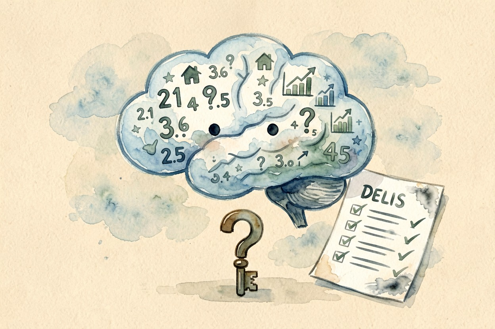

涌现是什么：大模型突然开窍的那道坎 — Learntide
把模型训到某个临界点，它忽然会了些谁也没手把手教过的事，这种突变就叫涌现。
大模型涌现是什么：跨过门槛后的突变

大模型涌现是什么？一句话，当参数量和训练数据跨过某个门槛，模型忽然具备了一些没人专门教过的本事。比如解一道绕弯的逻辑题，写一段真能跑的代码，或者顺着几个条件往下推。这些能力没有被单独训练过。它们从海量文本的统计规律里自己长出来。想先弄清模型本身，可以看 大模型是什么。
关键在「忽然」两个字。不是慢慢变好，是前一档还完全不会，下一档就会了。
涌现和普通变强差在哪
普通变强是一条平滑的曲线。数据多一倍，错误少一点。你能画出趋势，也能往后推一段。
涌现不吃这一套。它在图上是一个台阶。台阶前面几乎贴着地面，到了某个规模猛地抬起来。
小模型：翻译勉强能看，多步推理基本抓瞎
中模型：翻译顺了，推理还是错
大模型：翻译顺了，顺手把应用题也解了这种台阶式的变化，让「用小模型试水」变得不太可靠。小号跑不通，不代表大号跑不通。很多团队就是在这里下错了判断。
举个直观的例子。同一家的模型，小号做三位数乘法几乎全错，大号却能稳稳答对。中间没换训练技巧，只是规模上去了。
为什么研究者也预测不了

因为这些能力没有被写进任何一行代码。训练时给的目标很单纯：把下一个词猜得更准。
为了猜得准，模型被迫在内部整理出各种规律。语法、常识、因果、甚至一点点算术，都会被顺带压进参数里。规律攒够了，某些任务就顺带被解开。这里的最小单位，正是 token 是什么意思 里讲的那种切片。
问题是，谁也说不清「攒够」是多少。参数量、数据质量、训练方式互相纠缠，没人能提前算出临界点在哪。研究者只能先把规模拉上去，再回头看冒出了什么。这种事后诸葛的味道，正是涌现让人既兴奋又不安的地方。
涌现给使用者什么提醒

第一，判断一个任务能不能交给 AI，别只看手边那个小模型的表现。换个更大的试试，结论可能整个反过来。
第二，涌现依赖料。参数堆得再高，训练素材单薄雷同，门也开不了。数据的多样性和参数规模同样重要，这一点常被忽略。
第三，涌现出来的能力并不稳。同一个模型，换个问法可能就答砸了。它更像一种「大概率能行」。想让它在具体业务上稳住，还得靠 微调是什么 里那类后续打磨。
第四，别拿一次成功当定论。多问几遍，看它稳不稳，比看一次漂亮回答有用得多。
别把涌现当成模型懂了世界
会做题不等于理解题。模型解开一道应用题，靠的是它见过成千上万道相似的题，摸到了共同的骨架。你把题目改得足够刁钻，它照样露怯。
也别因此小看它。能从统计里长出这些本事，本身已经很了不起。只是别把它读成「机器开始有想法了」。真要判断它靠不靠谱，还是得看大模型涌现是什么背后的统计本质，而不是它表现得多像个人。
本文信息核对于 2026-08-08。AI 产品的价格、免费额度与功能变动频繁，实际以各工具官网当前说明为准。